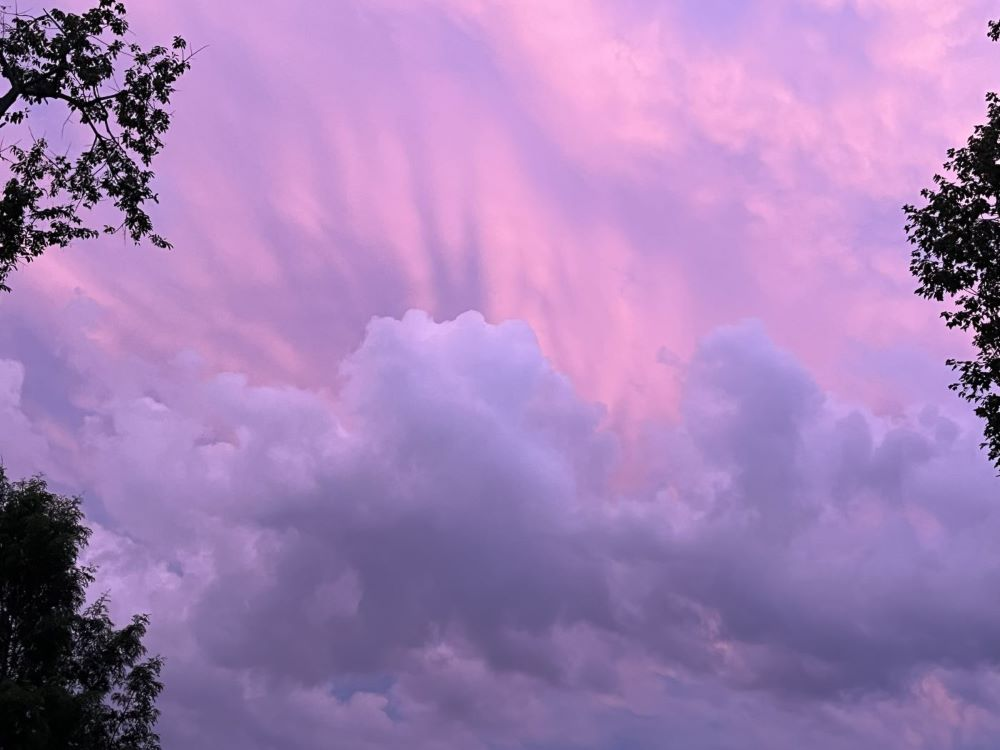
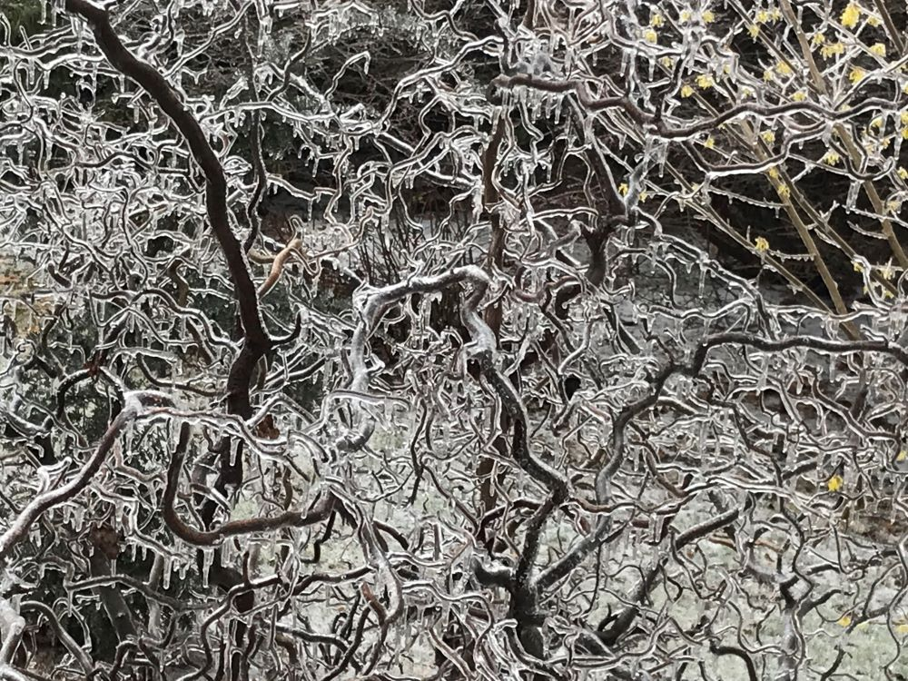
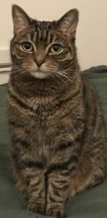

Intro to Web Design

I am excited to get my website finished so I can share my work and goals with anyone who might be interested.
I love photography and that's why I chose these photos. They're all different but I love the images.
I am looking forward to showing what I can do.

I will always show cute cat photos!
I am learning photography to create a real photography portfolio. My focus is nature and wildlife photography...and of course CAT photography! I would like to photograph shelter cats to create calendars and other media to help them get exposure. For now, I am excited to share my photos on my website. I would like to publish a coffee table book of cats that showcases their candid moments rather than fabricated studio shots.
